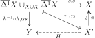
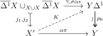

Simplicial
4 Model Categories
Model categories are a \(1\)-categorical way to present a homotopy theory (\(\infty \)-category) in a computable way.It follows that \(L\) is saturated, and \(R\) is cosaturated. \((\rightarrow ,\cong ),(\cong ,\rightarrow )\) are always trivial weak factorization systems. There is a weakening of the axioms for weak factorization systems that is equivalent.
-
Proof. Clearly these are implied by the definition of a weak factorization system. Conversely, it will suffice by duality to show that if a morphism \(f\) has the left lifting property with respect to all morphisms in \(R\), it is in \(L\). But we can factor \(f = g\circ h\) with \(h \in L, g \in R\). But finding a lift in the diagram below shows \(f\) is a retract of \(h\).
□
It follows that \(W\) contains all isomorphisms. There are two trivial homotopical structures, the minimal one, which is just isomorphisms, and the maximal one, which contains all morphisms. I think the minimal one is only useful for receiving maps (derived functors), and the maximal one is useful because its homotopy category is essentially the homotopy type of the nerve. A homotopical functor between homotopical categories preserves weak equivalences. If \(D\) has the minimal homotopical structure, homotopical functors \(C \to D\) are the same as functors \(h(C)\to D\).
The homotopy (\(\infty \)-)category of a homotopical category is its localization under weak equivalences. In otherwords, it is the universal \(\infty \)-category receiving a map from it that such that the weak equivalences are sent to equivalences. The homotopy \(1\)-category is the \(1\)-coskeleton of this, given by \(1\)-categorical localization.
-
Definition 4.5. A (closed) model category \(C\) is a category equipped with three classes of arrows: cofibrations (\(\rightarrowtail \)), fibrations (\(\twoheadrightarrow \)) and weak equivalences (\(\xrightarrow {\sim }\)) satisfying the following axioms:
-
(CM1) \(C\) has all finite colimits and colimits
-
(CM2) Weak equivalences satisfy \(2\) out of \(3\)
-
(CM3) \((\overset {\sim }{\rightarrowtail }, \twoheadrightarrow ), (\rightarrowtail ,\overset {\sim }{\twoheadrightarrow })\) form weak factorization systems.
-
Note that the definition is self-dual. Observe that for a model category, any pair of classes cofibrations, fibrations, weak equivalences determines the third.
-
Proof. The data of an adjunction is the same as giving the counit and unit maps that satisfy some identities. Since \(F,G\) are homotopical, they descent to functors on \(hC\) and \(hD\), and so do the unit and counits, and the diagrams still commute. □
A main step in producing model categories is in producing factorization systems. The following, Quillen’s small object argument, produces functorial factorizations under general conditions from a starting class of morphisms. In particular, if a category is presentable, the conditions are satisfied.
The following definition is slightly nonstandard.
-
Proposition 4.8 (Small object argument). Let \(J\) be a set of maps in \(C\), and suppose \(C\) is cocomplete. If the codomains of elements of \(J\) are \(\kappa \)-small, then there is a functorial factorization making \((\phantom {}^\oslash (J^{\oslash }),J^{\oslash })\) into the smallest weak factorization system containing \(J\). Moreover, \(\phantom {}^\oslash (J^{\oslash })\) is the weak saturation of \(J\), or alternatively retracts of morphisms coming from this construction.
-
Proof. Let \(f:X \to Y\) be our map and let \(A_f\) be the set of all commutative squares \(S\) of the form
where \(S_\alpha \in J\). Now consider the pushout diagram:
There is a canonical projection \(f_1:X_1\to Y\) given by the \(S_y\) and \(f\), and the construction of \(X_1\) is functorial. Moreover, \(X \to X_1\) is in \(\phantom {}^\oslash (J^{\oslash })\), and for any diagram in \(A\), there is a canonical lift on \(X_1\). Now we can inductively define \(f_\alpha , X_\alpha \) for any limit ordinal. Namely, \(X_{\alpha +1},f_{\alpha +1} = (X_{\alpha })_1,(f_{\alpha })_1\). For a limit ordinal, define it to be the limit. of the \(X_i,f_i\) before it. Then \(X \to X_{\kappa }\) is in \(\phantom {}^\oslash (J^{\oslash })\) as it is a transfinite composite of such things, and \(f_{\kappa }:X_{\kappa } \to Y\) is in \(J^{\oslash }\) since the codomains are \(\kappa \)-small.
This verifies factorization in a functorial way. The lifting property comes from Lemma 2.11, so this is a weak factorization system, and it is clearly the minimal one containing \(J\) on the left. We have only used the operations in the weak saturation of \(J\) to construct the factorization, so by Lemma 4.2, \(\phantom {}^\oslash (J^{\oslash })\) is the weak saturation of \(J\). □
The factorization systems of a category \(C\) form a poset, where \((L,R) \leq (L',R')\) iff \(L \subset L'\).
-
Example 4.11. We can easily classify nontrivial weak factorization systems \((L,R)\) in \(\Set \). Let \(\hookrightarrow ',\twoheadrightarrow ,\phi \) denote the classes of injections from a nonempty set, surjections, and maps from the empty set respectively, where we additionally include isomorphisms.
The first observation is that for any nontrivial map from the empty set \(f\), \(\phantom {}^\oslash f =f^{\oslash } = \hookrightarrow '\cup \twoheadrightarrow \). So the model structures on \(\Set \) are just model structures on nonempty sets (temporarily called \(C\)) with \(\phi \) attached to either \(L\) or \(R\). So from now on we work in \(C\).
Suppose \(f \in L\) that isn’t injective. Then the map \(\cdot \cdot \to \cdot \) is a pushout of \(f\). The maps with the right lifting property with respect to this are the injections. The maps with the left lifting property with respect to injections are the surjections, giving \((\twoheadrightarrow ,\hookrightarrow ')\). .
If in addition there is a nonempty nontrivial injection in \(L\), then \(R\) has to be just isomorphism.
If \(L\) has instead a map which isn’t surjective, \(R\) has all surjections, and we see \(L\) has to be injection, giving \((\hookrightarrow ',\twoheadrightarrow )\). Any additional maps in \(L\) would again make it everything.
-
Example 4.12. Consider a poset \(P\) as a category. \(f \oslash g\) iff \(\cod f \leq \dom g\) whenever \(f \leq g\). We can obtain a large family of weak factorization systems \((\rightarrowtail ,\twoheadrightarrow )\) by choosing a family of arrows \(A\) such that \(a \leq b, a \in A \implies b \in A\), and declaring all arrows of \(A\) along with isomorphisms to be \(\rightarrowtail \), and all other nonidentity arrows along with isomorphisms to be \(\twoheadrightarrow \).
For example, on \(\Delta ^1\times \Delta ^1\), the only weak factorization system (up to automorphisms) not coming from this construction is
\(\Delta ^1\times \Delta ^1\) can be used to construct an example of factorization systems \((\rightarrowtail ,\overset {\sim }{\twoheadrightarrow }) \leq (\overset {\sim }{\rightarrowtail }, \twoheadrightarrow )\) that don’t come from a model structure. In particular, consider the diagram below:
Another example comes from the poset \(\Delta ^2\), where we use the following pair of weak factorization systems:
These don’t come from model structures because the weak equivalences wouldn’t satisfy \(2\) out of \(3\).
The last part of Example 4.12 shows two obstructions to two factorization systems \((\rightarrowtail ,\overset {\sim }{\twoheadrightarrow }) \leq (\overset {\sim }{\rightarrowtail }, \twoheadrightarrow )\) giving rise to a model structure. These are the only obstructions, as shown below.
-
Proposition 4.13. Let \(C\) have finite limits and colimits. \((\rightarrowtail ,\overset {\sim }{\twoheadrightarrow }) \leq (\overset {\sim }{\rightarrowtail }, \twoheadrightarrow )\) are the factorization systems of a model structure iff \(\overset {\sim }{\twoheadrightarrow }\cup \overset {\sim }{\rightarrowtail }\) satisfies \(3\) out of \(4\) with respect to \(\twoheadrightarrow \cup \rightarrowtail \), and \(\overset {\sim }{\twoheadrightarrow }, \overset {\sim }{\rightarrowtail }\) satisfy \(2\) out of \(3\) with respect to \({\twoheadrightarrow }, {\rightarrowtail }\) respectively.
-
Proof. Those conditions are necessary for weak equivalences to satisfy \(2\) out of \(3\). In the proof of sufficiency, we declare an arrow \(f\) to be a weak equivalence if it factors as \(h \circ f\), where \(h\) is a trivial fibration and \(f\) a triival cofibration. Because of \(3\) out of \(4\) and the fact that we have a factorization system, this is equivalent to \(f\) factoring as a composite of maps that are either trivial fibrations or trivial cofibrations.
First we observe that the trivial fibrations are the fibrations that are weak equivalences and dually for cofibrations. Indeed, a trivial fibration by assumption is a fibration, and the trivial factorization shows it is a weak equivalence. If \(f\) is a trivial fibration and a week equivalence, then factoring it as a trivial fibration and cofibration and lifting as in the diagram below shows that it is a retract of a trivial fibration.
It remains then to show weak equivalences satisfy \(2\) out of \(3\).
First we can observe that any composite of weak equivalences is a weak equivalence because it can be factored a composite of trivial fibrations and cofibrations. Now suppose \(h = g\circ f\) where \(f,h\) are weak equivalences. We can factor \(g\) into a fibration \(g'\) and trivial cofibration, which we can absorb into \(f\). Then factor \(f,h\) as \(f' \circ f'',h'\circ h''\), trivial cofibrations followed by a trivial fibration. Because of \(2\) out of \(3\), it suffices to show that \(g \circ f'\) is a trivial fibration. But this follows from the \(3\) out of \(4\) property on the square \((g \circ f') \circ f'' = h'\circ h''\). The other part of \(2\) out or \(3\) is dual. □
Note that such a model structure is necessarily unique. In practice, we are often supplied a notion of weak equivalence satisfying two out of three. This makes it a bit easier to check something is a model category. Here are two ways in which that can be realized.
-
Lemma 4.14. Let \(C\) have finite limits and colimits. Suppose we have two factorization systems \((\rightarrowtail ,\overset {\sim }{\twoheadrightarrow }) \leq (\overset {\sim }{\rightarrowtail }, \twoheadrightarrow )\) and a notion \(\xrightarrow {\sim }\) of weak equivalence satisfying \(2\) out of \(3\) and such that \(\overset {\sim }{\twoheadrightarrow } = \xrightarrow {\sim }\cap \twoheadrightarrow \) and \(\overset {\sim }{\rightarrowtail } \subset \xrightarrow {\sim }\). Then this data gives a model structure.
-
Proof. It suffices to check that \(\xrightarrow {\sim }\cap \rightarrowtail \subset \overset {\sim }{\rightarrowtail }\). But we can factor a weak equivalence as a triival cofibration and trivial fibration, and if it is also a cofibration lift the square of this factorization to see that it is a a retract of a trivial cofibration. □
-
Proposition 4.15. Let \(\adjunction {F}{C}{D}{U}\) be an adjunction, suppose that \(D\) is bicomplete, \(C\) has a model structure cofibrantly generated by \(\kappa \)-small objects that are sent to \(\kappa '\)-small objects in \(D\). We can try to define a model structure by having a map in \(D\) be a fibration or weak equivalence if it is after applying \(U\). Suppose that if \(f \in D\) has the left lifting property with respect to \(g\) such that \(Ug\) is a fibration, then \(Uf\) is a weak equivalence. Then we get a cofibrantly generated model structure generated by \(Fi\) where \(i\) are the generators for \(C\).
-
Proof. The condition on fibrations and weak equivalences clearly determines the model structure if it exists. We can construct our factorizations via Proposition 4.8 since the generators of the factorization systems for \(D\) are \(F\) applied to the ones for \(C\) by the adjunction, and these are sent to \(\kappa \)-small objects. \(2\) out of \(3\) is clear so by Lemma 4.14 and the last assumption, we are done. □
-
Example 4.16. The Serre model structure on the category \(\CGHaus \) has the cofibrations generated by \(|\Lambda ^n_i|\subset |\Delta ^n|\) and the trivial cofibrations are generated by \(|\partial _n \Delta ^n| \subset |\Delta ^n|\), and a weak equivalence to be a weak homotopy equivalence. \((CM1), (CM2)\) are clearly satisfied. By Lemma 3.18, a fibration is a trivial fibration iff it is a weak equivalence. Moreover, trivial cofibration of the construction in Proposition 4.8 are weak equivalences since they are the inclusion of a deformation retract. Thus any trivial cofibration is since it is a retract of the construction. By Lemma 4.14 we are done.
-
Example 4.17. The Quillen model structure on \(\SSet \) has cofibrations generated by \(\Lambda ^n_i \subset \Delta ^n\), and trivial cofibrations generated by \(\partial \Delta ^n \subset \Delta ^n\). From the Proposition 4.8, these give factorization systems where the cofibrations are anodyne extensions, and the trivial cofibrations are inclusions by Lemma 2.17. A map \(X \to Y\) is a weak equivalence if it induces an isomorphism on \(\pi _n\) after passing to fibrant replacements. This agrees with the usual notion of weak equivalence for fibrant things, and \((CM1), (CM2)\) are satisfied. Now given a Kan fibration, by Proposition 3.7 it is an isomorphism on homotopy groups iff it is trivial. By Proposition 3.16, \(X \to Y\) is a weak equivalence iff \(|X| \to |Y|\) is in the Serre model structure. Moreover, the realization of a cofibration is a cofibration, so since \(|\Lambda ^n_i| \subset |\Delta ^n|\) is a weak equivalence, and the set of cofibrations such that \(|X|\to |Y|\) is an equivalence is weakly saturated, all trivial cofibrations are weak equivalences. Thus by Lemma 4.14 we are done.
-
Proof. This is a consequence of Lemma 4.18 and the fact that any factorzation will automatically becoma a relative factorization. □
-
Proof. Finite limits and colimits exist in \(C_{/D}\), and weak equivalences satisfy \(2\) out of \(3\). By Lemma 4.19, we can lift the factorization systems, so we are done. □
4.1 Homotopy category of a model category
The model structure gives a handle on the associated homotopy category. For example it is possible to construct a mapping space from cofibrant objects to fibrant objects that agrees with the mapping space in the \(\infty \)-category. We will start by understanding the homotopy \(1\)-category, denoted \(h(C)\). If \(A\) is an object of \(C\), define a cylinder object of \(A\), denoted \(\Delta ^1A\) (resembling \(\Delta ^1\times A\)) to be a factorization
Where \(\nabla \) is the fold map. The dual notion is a path object of \(B\), denoted \(B\Delta ^1\) (resembling \(B^{\Delta ^1}\)). Cylinder objects always exist, and furthermore we can always make the weak equivalence also a fibration.
\(f,g\) are left homotopic if there is a left homotopy with respect to some cylinder. If \(f, g\) are left homotopic via some cylinder, \(hf, hg\) are too. There is also a dual notion of right homotopy.
-
Proof. By pushing out the initial maps to the two factors \(A\), we see that each of the inclusions into \(A\cup A\) is a cofibration, so the components of \(i\) are as well. Moreover, since the map \(\Delta ^1A \to A\) is a weak equivalence, by the \(2\) out of \(3\) property, so are the components of the inclusion.
Reflexivity of left homotopy comes from the canonical map \(\Delta ^1A \to A\). Symmetry comes from swapping the factors. Transitivity follows by observing that we can pushout two left homotopies and two cylinders along a common map to get another homotopy and cylinder. We need \(A\) to be cofibrant so that the pushout is also a cylinder. □
-
Proof. It will suffice to show by duality that if we have a right homotopy, and a cylinder object \(\Delta ^1A\) for \(A\), then \(f,g\) are left homotopic with respect to \(\Delta ^1A\). Let \(p_0,p_1\) be the components of the projection \(B\Delta ^1 \to B\times B\), let \(\sigma : B\to B\Delta ^1\) be the equivalence coming from the path structure, and let \(h\) be the right homotopy. Then the map \(p_1\gamma \) in the diagram below is a left homotopy.
□
We will call a map \(\gamma :\Delta ^1A \to B\Delta ^1\) such that the diagram in Proposition 4.23 commutes a correspondence between the left and right homotopies.
-
Proof. Since homotopy equivalences are closed under composition and we can factor a weak equivalence into a trivial fibration and cofibration, it suffices by duality to show it when \(f\) is a trivial cofibration. If \(\cdot \) denotes the terminal object, let \(g\) denote a lift of the diagram
By construction it is a left inverse so it suffices to show \(f \circ g\) is homotopic to the identity. This can be achieved by finding a lift in the diagram below.
□
Whitehead’s theorem has a converse.
-
Proof. It is ok to just think about the full essentially surjective subcategory of the homotopy category consisting of cofibrant fibrant objects. Now suppose we have a functor \(F:C \to D\) inverting weak equivalences. Since the two inclusions into a cylinder are equal in the homotopy \(1\)-category, \(F\) factors through the category obtained by identifying homotopy classes of maps. By Lemma 4.24, weak equivalences are already isomorphism in this category, so the factorization is unique.
Now suppose that a map \(f:X \to Y\) is an isomorphism in the homotopy category. After passing to cofibrant fibrant replacements using the \(2\) out of \(3\) property, we can assume that our objects are cofibrant fibrant, so that \(f\) has a homotopy inverse \(g\). Moreover, by factoring \(f\) into a trivial cofibration and fibration and using Lemma 4.24, we can assume \(f\) is a fibration. The strategy is to show that \(f\) has the right lifting property with respect to cofibrations. Let \(\Delta ^1X,\tilde {Y}\) be path objects for \(X,Y\), \(k\) a right homotopy from \(gf\) to the identity, and form the diagram below given a map from a cofibration \(i\) to \(f\) given by maps \(\alpha ,\beta \):
If we could fill in the map \(?\) in a way that \((p_0,?)\) is a fibration and the diagram commuted, it would have to be a trivial fibration by the \(2\) out of \(3\) property for the composition with \(X\times _{\pi _2} Y \to X\), so we could make the indicated lift and be done.
To make \(?\) we will choose a particularly nice right homotopy from \(gf\) to the identity by slightly modifying the dual construction of Proposition 4.23.
Let \(h:\Delta ^1X \to X\) be a left homotopy from \(gf\) to the identity, and \(s\) the map \(\Delta ^1X \to X\). Choose a path object \(Y\Delta ^1\) for \(Y\). We can make a path object \(X\Delta ^1\) for \(X\) with a compatible fibration \(\hat {f}=?\) to \(Y\Delta ^1\) by factoring the map \((\Delta ,\sigma _Y f): X \to (X\times X)\times _{Y\times Y} Y\Delta ^1\) as a trivial cofibration and fibration. Then create a lift \(Q\) in the diagram below.
\(k=i_1Q\) is a right homotopy from \(gf\) to the identity with the extra property that \(\hat {f}k = \sigma _Yf\). This shows that the strategy works. □
To compute homotopy classes of maps, we don’t need both \(X,Y\) to be cofibrant fibrant.
-
Proof. Let \(X\) be cofibrant, and \(Y\) be fibrant. We can choose a cofibrant replacement \(Y'\) with a trivial fibration to \(Y\). The induced map on homotopy classes of maps from \(X\) is surjective since \(X\) is cofibrant. By looking at the map \(X \cup X \to \Delta ^1X\) in \(C_{X\cup X/}\), it is injective on homotopy classes. Making the dual argument we can reduce to the case when \(X,Y\) are cofibrant and fibrant, where we can use Theorem 4.25. □
We now briefly examine the higher categorical structure on a model category. Let \(X\) be a semi-simplicial set. We will inductively define a semi-simplicial set of cylinders for \(A\), denoted \(\Cyl (A)\), where a map of a \(X\)-cylinder object for \(A\) is denoted \(XA\). A \(\Delta ^0\)-cylinder is the data below.
Suppose we have defined the \(\Delta ^{n-1}\)-cylinders. Then a \(\Delta ^n\)-cylinder will be a choice of \(\partial {\Delta ^n}\)-cylinder and a diagram as below.
Its boundary maps will be the ones coming from \(\partial \Delta ^nA\). Using \(\Cyl (A)\), we can define a semi-simplicial mapping space \(\Map _{\Cyl }(A,B)\) where the \(n\)-simplices are a choice of \(\Delta ^nA\) and a map \(\Delta ^nA \to B\). There is a dual notion of \(\Path (B)\) and \(\Map _{\Path }(A,B)\). We can also force these to be simplicial sets by Kan extension.
In any case, \(\Cyl (A)\) has a very nice property that cells can be reordered. For example, there is an involution on the \(1\)-simplices given by swapping. This suggests it’s even better than a Kan complex. Maybe a semi-simplicial structure is not the right thing but rather some other test category such as a globe or cube category is better. The following lemma suggests as much.
-
Lemma 4.28. Given a left homotopy \(h:\Delta ^1X \to Y\) from \(\alpha \) to \(\beta \) with structure map \(s:\Delta ^1X\to X\), the composite homotopy \(h^{-1}\circ h:\overline {\Delta ^1}X\to X\) is homotopic to the constant homotopy on \(\alpha \) via a map \(H\), i.e there is a diagram as below:

-
Proof. Choose \(Y\Delta ^1\) with structure map \(\sigma \), and a correspondence \(\gamma \) between \(h\) and a right homotopy \(k\) on \(Y\Delta ^1\). \(\gamma \) glues on \(\overline {\Delta ^1}X\cup _{X\cup X}\overline {\Delta ^1}X\) to give a map \(\overline {\gamma }\), so we can lift the diagram

and the map \(p_1K=H\) works. □
-
Proof. \(f\) admits a section \(g\) by lifting the identity along \(f\), and since this is an inverse in the homotopy category, there is a left homotopy \(h: \Delta ^1X \to X\) from the identity to \(gf\). Let \(h^{-1}\) denote tha homotopy in the other direction obtained from swapping factors. \(gfh^{-1}\) is a homotopy from \(gf\) to itself, and let \(gfh^{-1}\circ h:\overline {\Delta ^1}X \to X\) be the composite of the homotopies \(gfh^{-1}\) and \(h\).
By Lemma 4.28 \(f(gfh^{-1}\circ h) = fh^{-1}\circ fh\) is homotopic to the identity via some homotopy \(H:X' \to Y\), where \(i_L,i_R\) are the inclusions \(\overline {\Delta ^1}X \to X'\), we can create a lift \(K\) as below so that \(Ki_R\) will be the desired fibrewise homotopy.
□
-
Proposition 4.30. Let \(\adjunction {F}{C}{D}{U}\) be an adjunction, suppose that \(D\) is bicomplete, \(C\) has a model structure cofibrantly generated by \(\kappa \)-small objects that are sent to \(\kappa '\)-small objects in \(D\). We can try to define a model structure by having a map in \(D\) be a fibration or weak equivalence if it is after applying \(U\). If \(D\) has natural path objects \(P\) and a natural fibrant replacement \(Q\), we get a cofibrantly generated model structure generated by \(Fi\) where \(i\) are the generators for \(C\).
-
Proof. By Proposition 4.15, it suffices to show if \(f \in D\) has the left lifting property with respect to \(g\) such that \(Uf\) is a fibration, then \(Uf\) is a weak equivalence. Now produce a lift \(u\) of the diagram
Then construct a lift in the diagram
, so that in the diagram
The upper triangle commutes and the lower triangle does up to right homotopy. Applying \(U\) to this square, which preserves right homotopy, we see that \(UA \to UB\) is an isomorphism in the homotopy \(1\)-category of \(C\). □
-
Remark 4.31. There is an alternate hypothesis that will make the proof of Proposition 4.30 go through, but seems not as good. Namely, we can assume \(U\) preserves \(\kappa \)-sequential colimits instead of the assumption about the generators being sent to small objects. Then we can use a variant of Proposition 4.8 to produce the factorization system. Namely, after countably many steps in the small object argument, since \(U\) preserves \(\kappa \)-sequential colimits, we will be able to lift the generating cofibrations in \(C\).
In a model category \(C\), under good conditions, triangles in \(hC\) can be lifted to \(C\).
-
Proposition 4.32 (Lifting from the homotopy category). Let \(C\) be a model category. Suppose we have a cofibration \(i:A \to B\), a morphism \(f:B \to C\) and a commutative triangle
in \(hC\). Assume moreover that \(A,B\) are cofibrant and \(C\) fibrant. Then there is a morphism \(g\) such that \(g \circ i = f\) and \([g] = \bar {g}\).
-
Proof. Choose a homotopy \(A\cup A \to \Delta ^1A \to C\) between \(g'f\) and \(i\) where \(g'\) is any map whose homotopy class is \(\bar {g}\). We can choose a compatible cylinder \(\Delta ^1A\coprod _{A\cup A} (B\cup B) \to \Delta ^1B \to B\) by factoring the natural map to \(B\) as a cofibration and a trivial fibration.
The homotopy naturally extends to \(\Delta ^1A \coprod _{A} B \to C\), and \(\Delta ^1A\coprod _AB \to \Delta ^1B\) is a trivial cofibration, so since \(X\) is fibrant, it extends to \(\Delta ^1B\), giving a homotopy between \(g'\) and a \(g\) solving the problem. □
Weak equivalences are not generally preserved under pushouts. Here is a condition under which they are:
-
Proof. We will show that \(j'\) is an equivalence in the homotopy category. Let \(X\) be an object, and consider the map \(\Hom _{hC}(B',X) \to \Hom _{hC}(B,X)\). To see it is surjective, observe that given a map \(f:B \to X\), we can homotope its restriction to \(A\) to something restricted from \(A'\). By Proposition 4.32, the original map can be homotoped to exhibit \(f\) as in the image.
To see injectivity, if \(s, s'\) are two identified maps, then there is a commutative square
By the surjectivity statement in the category \(C_{/X\times X}\), there is a lift in this square, giving injectivity.
□
-
Proof. This follows immediately from Lemma 4.33. □
We will now examine the notaion of a homotopy pushout square. It is a special case of homotopy colimits, but deserves special attention.
The pushout of a homotopy pushout square is given by taking the pushout of an equivalent cofibrant pushout square.
-
Proof. Suppose that there are two cofibrant pushout diagrams with a weak equivalence to a homotopy pushout square. We can find an equivalent cofibrant pushout diagram mapping to each of them in a compatible way as follows: Take something mapping compatibly into both of the top left objects of the pushout squares, replace it with an equivalence from a cofibrant object \(X\). The same method in \(C_{/X}\) yields an entire cofibrant pushout square mapping to each.
Thus it suffices to show that for any two cofibrant pushout squares, the pushout is an equivalence. Using Lemma 4.33, we can reduce to the case that we are only changing the object in the upper left corner: if we change only one of the other objects by an equivalence, that Lemma along with gluing for pushout squares implies the result.
Furthermore, we can factor the induced map on the upper left vertex into a trivial cofibration and trivial fibration. In the case of a trivial fibration, there is a section since the objects are cofibrant, so picking a section, we there is another pushout square between the diagonals of the pushout squares, and we are done using Lemma 4.33 again. Thus we can assume that the map in the upper left hand corner is a trivial cofibration, in which case it has a retraction. This induces a retraction on the pushout, showing that the pullback map is surjective on homotopy classes of maps to any space. By again mapping to \(X\Delta ^1\) relative to \(X\times X\), we see it is injective as well on homotopy classes, so the map on pushouts is an equivalence. □
We can often detect homotopy pushout squares in non-cofibrant diagrams
-
Proof. Take a cofibrant replacement of the pushout square, and observe that it induces an equivalence on the pushout by either using Lemma 4.33 under the first hypothesis, or the fact that \(C\) is left proper. □
As an example, we can prove the Mayer-Vietoris sequence on homotopy for a homotopy pullback square.
-
Proof. WLOG, we can assume that the diagram is a pullback square of fibrant objects and the maps \(E'\to B\), \(E\to B\) are fibrations. Then by Proposition 3.4, there are long exact sequences associated to both fibrations, and the fibres can be identified. We can view the map between the long exact sequences as a double complex with two nontrivial rows. Since the rows are exact, the total complex is exact. But the total complex is the Mayer-Vietoris long exact sequence with an extra copy of \(\pi _n\) of the fibres that can be removed since the fibres are just identified. □
4.2 Combinatorial Model Categories
Combinatorial model categories are a large class of model categories that are well behaved. Morally, they are the same as presentable \(\infty \)-categories. Pretty much every reasonable model category should be Quillen equivalent to a combinatorial one. For example, the category \(\Top \) of topological spaces isn’t presentable, but \(\SSet \) is.
Our goal will be to show that it is easy to produce these.
-
Lemma 4.42. Let \(\tau > \kappa \) be regular cardinals and let \(C \xrightarrow {p} D \xleftarrow {p'} C'\) be functors that are \(\kappa \)-cofinal, that preserve \(\tau \)-small \(\kappa \)-filtered colimits, and suppose that \(C,C',D\) are \(\kappa \)-filtered, \(\tau \)-small, and admit \(\tau \)-small \(\kappa \)-filtered colimits. Then there exist objects \(X \in C, X' \in C'\) such that \(p(X) \cong p'(X')\).
-
Proof. Say an ordinal is even if it is a limit ordinal plus an even number, and odd otherwise. Let \((\kappa )\) be the poset of ordinals of size \(<\kappa \) and let \((\kappa )_0\) and \((\kappa )_1\) denote the even and odd ones respectively.
Suppose we can construct a commutative diagram
Then since \(\kappa _0\) and \(\kappa _1\) are cofinal in \((\kappa )\), their colimits in \(D\) are isomorphic, but this agrees with the image of their colimits in \(C,C'\).
We can construct such a diagram inductively. On limit ordinals, we can extend by taking the colimit in either \(C\) or \(C'\). On sucessor ordinals, we can extend because we assumed that \(p,p'\) are \(\kappa \)-cofinal. □
-
Lemma 4.43. Let \(\tau \gg \kappa \) be regular cardinals with \(\tau > \kappa \), \(D\) a presentable category, and \(C_a,D_b, a \in A,b \in B\) \(\tau \)-filtered partially diagrams in \(D\) such that their colimits agree. Then for every pair of \(\tau \)-small subcategories \(A_0 \subset A, B_0 \subset B\), there exist \(\tau \)-small \(\kappa \)-filtered subsets \(A' \supset A_0\), \(B' \supset B_0\) such that the colimits of \(A'\) and \(B'\) agree.
-
Proof. Let \(P_A,P_B\) be tha poset of \(\tau \)-small \(\kappa \)-filtered subsets of \(A\) (resp \(B\)) which contain \(A_0\) (or \(B_0\)).Let \(X\) be the common colimits and consider the maps \(P_A,P_B \to D_{/X}\) given by taking colimits. Then applying Lemma 4.42 to this situation, we are done. □
-
Lemma 4.44. Let \(\kappa \) be a regular cardinal \(C_0\subset C\) a subcategory of a presentable category closed under \(\kappa \)-filtered colimits. \(C_0\) is \(\kappa \)-accessible iff the following condition is satisfied for all sufficiently large \(\tau \gg \kappa \):
Let \(X_{\alpha },\alpha \in A\) be a \(\tau \)-filtered diagram of \(\tau \)-compact objects in \(C\). For every \(\kappa \)-filtered subcategory \(B \subset A\), let \(X_B\) denote the colimit over \(B\). Then if \(X_{A}\) belongs to \(C_0\), then for every \(\tau \)-small subcategory of \(B\), there is a \(C \supset B\) that is \(\tau \)-small, \(\kappa \)-filtered, and \(X_C\) is in \(C_0\).
-
Proof. Choose \(\tau \) large enough so that \(C\) is \(\tau \)-presentable, let \(C^{\tau }\) be the \(\tau \)-compact objects. We’ll see that \(C^{\tau }\cap C_0\) generates \(C_0\) under \(\kappa \)-filtered colimits. Given an object in \(C_0\), present it as a colimit of a filtered diagram \(A\). Let \(S\) be the collection of \(\tau \)-small \(\kappa \)-filtered subdiagrams of \(A\) such that the colimit is in \(C_0\). We can then take the colimit over \(S\) of the colimits of subdiagrams of \(A\) to obtain the same object.
Conversely, suppose that \(C\) is generated under \(\kappa \)-filtered colimits by a small subcategory \(D \subset C_0\). Choose \(\tau \gg \kappa , \tau > \kappa \) such that every object of \(D\) is \(\tau \)-compact. To see that the condition is satisfied, suppose that we have a diagram \(X_{\alpha }, \alpha \in A\), with \(X_A \in C_0\) and \(A\) \(\tau \)-filtered. \(X_A\) is also the colimit over \(Y_{\beta }, \beta \in B\) with \(B\) a \(\tau \)-small \(\kappa \)-filtered diagram in \(D\). By replacing \(B\) with the family of \(\tau \)-small \(\kappa \)-filtered subdiagrams of \(B\), and using the family \(Y_{B'}\) for all such subsets, we can assume that \(B\) is \(\tau \)-filtered. Now we can apply Lemma 4.43. □
-
Proof. The subcategory of \(\Set ^{[1]}\) consisting of surjections is accessible (everything is a \(\kappa \)-filtered colimit of finite surjections). For any morphism \(i:a\to b\), the functor \(A^{[1]} \to \Set ^{[1]}\) sending \(f:x \to y\) to \(\Hom (b,x) \mapsto \Hom (b,y)\times _{\Hom (a,y)}\Hom (a,x)\) preserves filtered colimits if \(A,B\) are \(\kappa \)-compact.
\(F\) and \(W\cap F\) are obtained as the preimage of surjections on products of such maps (since they are defined via lifting properties with respect to a set of maps). Thus by Corollary 4.45 they are accessible.
By Proposition 4.8, there is a functorial factorization into a trivial cofibration and fibration. \(W\) is exactly the preimage of those that factor as a trivial cofibration and trivial fibration, so is accessible too. □
-
Lemma 4.47. Suppose that \(C,W\) are collections of morphism in a presentable category \(A\) with the following properties:
-
1. \(C\) is weakly saturated and is generated by a small set of morphisms \(C_0\).
-
2. \(C\cap W\) is weakly saturated.
-
3. \(W\) is an accessible subcategory of \(A^{[1]}\)
-
4. \(W\) satisfies \(2\) out of \(3\).
Then \(C\cap W\) is generated as a weakly saturated class by a small subset.
-
-
Proof. Choose \(\kappa \) so that \(W\) is \(\kappa \)-accessible, choose \(\tau \gg \kappa , \tau > \kappa \) such that Lemma 4.44 holds, \(C\) is \(\tau \)-accessible, and everything in \(C_0\) is \(\tau \)-compact. By Lemma 2.3, we can replace \(C_0\) with \(C \cap A^{\tau }\).
Let \(S = C_0 \cap W\). We will show that \(S\) generates \(C \cap W\) as a weakly saturated class of morphisms. Let \(\overline {S}\) be the weak saturation of \(S\). Suppose that \(f: X \to Y\) is a morphism in \(C \cap W\). By Corollary 2.77, there is a \(\tau \)-good \(C_0\)-tree \(\{Y_{\alpha }\}_{\alpha \in A}\) with root \(X\) such that \(Y\) is isomorphic to \(Y_A\) as objects in \(C_{X/}\). Say that a subset \(B\) of \(A\) is good if it is downward-closed and the canonical map \(X \to Y_B\) is in \(W\). We would like to prove that \(A\) is good.
The set of good \(A\) is closed under transfinite union.
Suppose that \(B,B' \subset A\) are such that \(B,B', B\cap B'\) are good. Then \(B\cup B'\) is good. To see this, we consider the pushout
The morphisms are all in \(C\), and the upper horizontal map is in \(W\) by \(2\) out of \(3\). Since \(C\cap W\) is closed under pushouts, the lower horizontal map is in \(W\) too, so by \(2\) out of \(3\) again, the map \(X \to Y_{B'} \to Y_{B' \cup B}\) is in \(W\).
Next, observe that if \(B_0\subset A\) is \(\tau \)-small, then there is a \(\tau \)-small \(B\supset B_0\) such that \(Y_{B_0}\) is in \(C_0\), and so that \(B\) is good.
Next we will prove:
-
• Let \(A'\) be a good subset of \(A\) and let \(B_0\subset A\) be \(\tau \)-small. Then there exists a \(\tau \)-small subset \(B_0 \subset B\subset A\) with \(B,B\cap A'\) good.
Start by setting \(B'_0 = A \cap B_0\). We will inductively construct increasing sequences of \(\tau \)-small subsets \(B_i,B'_i\) as follows: Choose \(B_{i+1}\) to be a \(\tau \)-small good subset of \(A\) containing \(B_i \cup B'_i\) and \(B'_{i+1}\) to be a \(\tau \)-small good subset of \(A\) containing \(B_{i+1} \cap A'\). Taking the union over \(i\), we will have proven the desired result.
Now there is no obstruction to making a good set larger, so \(A\) is good by Zorn’s Lemma. □
-
Here is the desired converse:
-
Corollary 4.48. Let \(A\) be a presentable category and let \(W\) and \(C\) be classes of morphisms in \(A\) with the following properties:
-
1. \(C\) is weakly saturated and generated by a small set.
-
2. \(C\cap W\) is weakly saturated.
-
3. \(W\) is accessible.
-
4. \(W\) has the \(2\) out of \(3\) property.
-
5. \(W\subset C^{\oslash }\).
Then \(C,W, (C\cap W)^{\oslash }\) give rise to a combinatorial model structure on \(A\).
-
-
Proof. A presentable category has finite limits and colimits. To see we get a model structure, we need to check that \((C,(C\cap W)^{\oslash })\) and \((C\cap W,C^{\oslash })\) are weak factorization systems, which follows from Proposition 4.8. To see it is combinatorial, we just observe that by Lemma 4.47, \(C\cap W\) is generated by a small set in addition to \(C\). □
Our goal now is to get a more useable version of Corollary 4.48.
-
Definition 4.49. Let \(A\) be a presentable category. A class \(W\) of morphisms is perfect if it satisfies the following conditions:
-
1. Every isomorphism belongs to \(W\), and \(W\) satisfies \(2\) out of \(3\).
-
2. \(W\) is stable under filtered colimits.
-
3. There exists a small set \(W_0 \subset W\) such that every morphism in \(W\) is a filtered colimit of morphisms in \(W_0\).
-
The following is a corollary of Corollary 4.45.
-
Proposition 4.51. Let \(A\) be a presentable category. Suppose that \(W\) is a perfect class of morphisms and \(C_0\) is a small set of morphisms such that
-
1. For any pair of coCartesian squares:
where \(f \in C_0\) and \(g \in W\), then \(g' \in W\).
-
2. \(W \supset C_0^{\oslash }\).
Then \(W\) and the saturation of \(C_0\) determine a combinatorial left proper model structure.
-
-
Proof. First we will show left properness. First observe that \((2)\) actually holds for \(f\) in a weakly saturated set (this uses that \(W\) is stable under filtered colimits), so it holds for \(C\), the weak saturation of \(C_0\).
To check the conditions of Corollary 4.48, we only need to check that \(C\cap W\) is weakly saturated. It is stable under retracts since \(W\) is stable under filtered colimits. To see that \(C\cap W\) is stable under pushouts, we can factor any pushout as a pushout by a trivial fibration and a cofibration as below.
We then know by left properness that \(f' \in C\cap W\) and hence again by left properness \(h' \in W\). By the two out of \(3\) property \(f'' \in W\). □
-
Remark 4.52. Combinatorial left proper model categories arising from Proposition 4.51 are exactly those with \(W\) closed under filtered colimits.
4.3 Derived Functors
A left Quillen functor between model categories is one that preserves (finite) colimits, cofibrations and trivial cofibrations. Dually there is a notion of right Quillen functor.
Quillen functors are useful because one can compute their derived functors.
To help compute derived functors, we can use a deformation.
Let \(C_Q\) denote the full subcategory of objects in the image of \(Q\), also called a left deformation retract. A left deformation induces an equivalence between \(h(C)\) and \(h(C_Q)\). If we have a functorial map from a cofibrant fibrant factorization in a model category, that is a left defomation.
\(F\) is left deformable if it admits a left deformation. Any left deformable functor has a maximal subcategory on which it is homotopical (not proven here but uses 2 out of 6).
-
Proof. Let \(h_C\) denote the localization functor of \(C\). Since \(F\) is homotopical on \(C_Q\), \(h_DFQ\) does descend to a functor from \(h(C)\). \(h_DFq\) gives the natural transformation we want. Instead of proving the universal property in \(h(D)^C\), it suffices to prove it in the equivalent full subcategory of \(h(D)^C\) consisting of homotopical functors. Now suppose that \(G\in h(D)^C\) is homotopical and we have a natural transfromation \(\eta :G\to h_DF\). \(Gq:GQ\to G\) is a natural transformation that is a natural isomorphism since \(G\) is homotopical. Thus by naturality of \(\eta \), \(\eta \) factors as \(h_DF q \circ \eta Q \circ (Gq)^{-1}\). Uniqueness follows from the fact that \(h_DFq\) is a natural isomorphism since \(q\) is a weak equivalence. □
Morally here is how one can think about a deformation. When you invert weak equivalences, you really get an \(\infty \)-category, and we can expect left Kan extensions to be the \(1\)-categorical shadow of computing (homotopy) colimits in the \(\infty \)-category, as is the formula for Kan extensions when enough colimits exist. The deformation allows you to \(1\)-categorically change your object to one that is homotopically good, so that the \(\infty \)-categorical colimit agrees with the usual one.
There is really a pseudo \(2\)-functor taking a homotopical category \(C\) to \(h(C)\), a left deformable functor to its total left derived functor, and a natural transformation of such functors to the derived natural transformation.
-
Proof. Let \(f:X \to Y\) be a weak equivalence of cofibrant objects. Factor \(X \coprod Y \xrightarrow {f,1} Y\) as a cofibration and trivial cofibration, and consider the diagram below.
By \(2\) out of \(3\), \(i,j\) are weak equivalences, so they get sent to weak equivalences. But then since the map \(Z \to Y\) is a retraction of \(i\), it is also sent to a weak equivalence by \(2\) out of \(3\). Then \(f\) is too by \(2\) out of \(3\). □
-
Proof. The first fact follows from 4.58 and second just requires the additional observation that the inclusion of the full subcategory of cofibrant objects induces an equivalence on the homotopy category. □
An adjunction is called a Quillen adjunction if the left adjoint is left Quillen and similarly for the right adjoint.
-
Proof. The preserving limits and colimits is satisfied because of the adjunction. The equivalences then follow because of Lemma 2.13. □
A Quillen adjunction induces an adjunction on the homotopy \(1\)-categories. The same can be said of an adjoint pair of deformable functors between homotopical categories.
A Quillen adjunction is a Quillen equivalence if its derived functors are an equivalence.
-
Proof. Suppose \(F\dashv G\) is a Quillen equivalence. Then for \(c\) cofibrant and \(d\) fibrant, \(F,G\) agree with the derived functors, so combined with the fact that weak equivalences are the isomorphism in the homotopy category, the condition follows. Conversely if the condition holds, then the unit map \(c \to GFc\) is an isomorphism in \(h(C)\) since \(G\) is given by taking a fibrant replacement and applying \(G\), so by the condition it is equivalent to \(Fc\) being isomorphic or weakly equivalent to the fibrant replacement. □
For example \(S\) and \(|\cdot |\) give a Quillen equivalence between the Serre and Quillen model structures.
Simplicial model categories are ones that have a compatible simplicial enrichment and tensoring/cotensoring. Many natural examples of model categories are simplicial model categories.
-
Definition 4.62. A left Quillen bifunctor \(\otimes : C \times D \to E\) is a map of model categories preserving colimits in both variables, and such that the Construction 2.26 \(\hat {\otimes }\) sends pairs of cofibrations to cofibrations that are trivial iff either arrow is.
-
Proof. These claims follow from the condition on \(\hat {\otimes }\) and Lemma 4.58. □
-
Proof. This follows from Lemma 2.27. □
The derived natural transformation is functorial.
-
Proof. We can replace all the model categories with the subcategory of cofibrant objects. The left Quillen functors are still defined since they take cofibrations to cofibrations and the initial object to the initial object. Now there is no deriving necessary. □
-
Proof. Produce a diagram
by choosing a fibrant replacement for \(Y\) and factoring \(X \to Y \to RY\). The map \(Y\times _{RY}RX \to RX\) is an equivalence by hypothesis, so \(X \to Y\times _{RY}RX \) is an equivalence by \(2\) out of \(3\). Pulling back along \(Z \to Y\) is a right Quillen functor, so it preserves weak equivalences between fibrant objects. Applying this to \(X \to Y\times _{RY}RX \), we get the desired result. □
-
Example 4.68. The Quillen model structure on simplicial sets is left and right proper, (or just proper). Left proper is clear. If \(X \to Y\) is an equivalence, and we pull it back via a fibration, it is an equivalence by using the \(5\)-lemma and comparing the long exact sequence on homotopy groups.
4.4 Enriched and Simplicial model categories
Our goal in this section is to study model categories that are enriched over others.
-
Example 4.71. Consider the monoidal category \(\FinSet \) with the Cartesian product, isomorphisms and maps from the empty set as cofibration, and isomorphisms weak equivalences. Every cocomplete model category is enriched over this in a canonical way, since iterated coproducts of an object with itself give the tensoring/cotensoring.
When \(S\) is \(\SSet \) with the Quillen model structure, this is the definition of a simplicial model category.
It follows from Example 4.71 that anything proven about model categories over a monoidal model category is a strict generalization about things that are true for model categories.
In some cases we can detect simplicial model structures with less effort than expected.
-
Proposition 4.73. Let \(C\) be a model category enriched over \(\SSet \) with every object cofibrant. Suppose that weak equivalences are closed under filtered colimits. Then the following are equivalent to the simplicial model category conditions:
-
1. \(A\) is tensored and cotensored over \(\SSet \).
-
2. For any cofibration in \(K \to L\) in \(\SSet \) and a cofibration \(c \to d\) in \(C\), the map \(c\otimes L \cup _{c\otimes K} d\otimes K \to d \otimes L\) is a cofibration.
-
3. For every \(n \geq 0\) and every object \(c \in C\), the natural map \(c\otimes \Delta ^n\to c\otimes \Delta ^0\) is an equivalence.
-
-
Proof.
Suppose that \(C\) is a simplicial model category. Clearly \((1)\) and \((2)\) are satisfied, as well as \(3\), since the map \(\Delta ^n \to \Delta ^0\) admits a section which is a trivial fibration.
Now suppose the conditions are satisfied. Since every object is cofibrant, \(C\) is left proper, and moreover the functor \(\otimes X:C \to C\) is homotopical.
We will first see that the tensoring bifunctor \(C\times \SSet \to C\) preserves weak equivalences in each variable. Fix \(c \in C\) and suppose that \(K \to K'\) is a weak equivalence in \(\SSet \). Factor it as a trivial fibration and trivial cofibration. The trivial fibration has a section, which is a trivial cofibration, (since it is injective) so we can reduce to the case of \(K \to K'\) being a trivial cofibration. The collection of all such \(K \to K'\) such that \(c\otimes K \to c\otimes K'\) is a trivial cofibration is weakly saturated, so we reduce to showing it for the horn inclusions \(\Lambda ^n_i \to \Delta ^n\). The inclusion of a vertex \(\{v\} \to \Lambda ^n_i\) is a pushout of horn inclusions of dimension \(<n\), so by induction and the \(2\) out of \(3\) property it suffices to show it for \(\{v\} \to \Delta ^n\) which was assumed.
Next fix \(K\), and we will see that \(c \to c\otimes K\) preserves weak equivalences. Let \(f:c \to c'\) be a weak equivalence. Since weak equivalences are closed under filtered colimits, it suffices to show this for \(K\) finite. We will then prove it by induction on the subcomplex of \(K\). Choose a subcomplex \(L\) of \(K\) for which the result is satisfied, and a nondegenerate cell \(\sigma \) we would like to adjoin. \(f\otimes \partial \sigma , f\otimes L\) are equivalences by the inductive hypothesis, and \(f\otimes \sigma \) is an equivalence by assumption.
Because our model structure is left proper, using assumption \((2)\) we get that \(D\otimes (-)\) applied to the diagram adjoining \(\sigma \) to \(L\) is a homotopy pushout for any \(D\). Thus since each of the components is a weak equivalence, the pushout is a weak equivalence.
Suppose now that \(i:c \to c'\) and \(j:S \to S'\) are cofibrations in \(C\) and \(\SSet \) respectively. We would like to prove that the induced map \(i \wedge j: (c\otimes S') \cup _{(c\otimes S}(c'\otimes S')\) is an equivalence if either \(i,j\) are equivalences. But this follows from applying \(2\) out of \(3\) and left properness to the diagram
□
With a simplicial model category, we have nice cylinders. For example, \(\Delta ^1\) is a cylinder object for \(\Delta ^0\) in \(\SSet \), and tensoring with \(A\) gives a cylinder object for \(A\) when \(A\) is cofibrant. Thus if \(A\) is cofibrant and \(B\) fibrant, then homotopy of maps \(A \to B\) agrees with equivalence in \(\ul \Hom (A,B)\).
Suppose that we have a Quillen adjunction \(F \dashv G\) between two \(S\)-enriched model categories \(C,D\), and \(G\) is an \(S\)-enriched functor. Then for every \(X \in C, Y \in D, s \in S\), there is a canonical map \(\Hom (s\otimes X,GY) \to \Hom (s\otimes FX,Y)\), which applied to the unit of the adjunction gives a family of maps \(\beta _{X,s}:s\otimes FX \to F(s\otimes X)\). In Lemma 2.28, it was determined that \(\beta _{X,s}\) is an isomorphism iff the adjunction is enriched.
-
Remark 4.74. Suppose that \(S\) is \(\SSet \) with the Quillen model structure. Then \(\beta _{X,s}\) is an equivalence. To see this, we know it for \(s = \Delta ^0\), and observe that the set of simplicial sets for which it is true is closed under weak equivalences, coproducts, and homotopy pushouts.
We will now consider the situation when \(\beta _{X,s}\) is a weak equivalence.
-
Proposition 4.75. Let \(C,D\) be \(S\)-enriched model structures, and \(F\dashv G\) a Quillen adjunction between the underlying model categories with \(G\) enriched. Assume that every object of \(C\) is cofibrant and that the map \(\beta _{X,s}\) is a weak equivalence fore every \(s,X\) cofibrant. Then TFAE:
-
1. \(F\dashv G\) is a Quillen equivalence.
-
2. The restriction of \(G\) determines a weak equivalence of \(S\) [REQUIRES SOMETHING AHEAD:((((]
-
-
Proof. A lift in a diagram of the form
is the same as a lift of a \(0\)-simplex in the map \(\Hom (B,X) \to \Hom (A,X) \times _{\Hom (B,Y)}\Hom (X,Y)\). But this is a trivial fibration if either of the vertical maps is trivial by the fact that the two-variable adjunction with \(\otimes \) is Quillen, so there is a unique lift up homotopy. □
We can reduce the amount of work needed to check something is a simiplicial model category by observing that we can check the condition of \(\otimes ,\{,\}\) or \(\hom \) being a Quillen bifunctor on generating cofibrations or generating fibrations.
-
Proof. It is clear that if \(f\) is an equivalence, then the other map is an equivalence. Conversely, if the other map is an equivalence, since \(\ul \Hom (B,C) \to \ul \Hom (A,C)\) is a fibration, it is a trivial fibration, and in particular bijective on \(\pi _0\). Thus \(f\) is an isomorphism in the homotopy category. □
Many categories of simplicial objects (eg: models of Lawvere theories) have natural simplicial model structures. These often come from inducing model structures through an adjunction
-
Proposition 4.78. Let \(\adjunction {F}{C}{D}{U}\) be an enriched adjunction of categories tensored and cotensored over \(\SSet \), suppose that \(D\) is bicomplete, and \(C\) has a simplicial model structure cofibrantly generated by \(\kappa \)-small objects that are sent to \(\kappa '\)-small objects in \(D\). We can try to define a model structure by having a map in \(D\) be a fibration or weak equivalence if it is after applying \(U\). Suppose that if \(f \in D\) has the left lifting property with respect to \(g\) such that \(Uf\) is a fibration, then \(Uf\) is a weak equivalence.
Then \(D\) has a cofibrantly generated simplicial model structure where the fibrations and weak equivalences are determined by applying \(U\), the cofibrations are generated by \(U\) applied to generators for \(D\).
-
Proof. By Proposition 4.15 a model structure, and we only need to show that it is simplicial.
To do this, we can identify the map
\[U\hom _{D}(L,X) \to U(\hom _{\simp C}(K,X)\times _{\hom _{D(K,Y)}} \hom _{D} (L,Y) )\]
with
\[\hom _{C}(L,UX) \to \hom _{C}(K,UX)\times _{\hom _{C(K,UY)}} \hom _{C} (L,UY)\]
since the adjunction is enriched and \(U\) preserves pullbacks. If \(K \to L\) is a cofibration and \(X \to Y\) is a fibration, one of which is trivial then this map is a fibration, since \(C\) is a simplicial model category. □
-
Lemma 4.79. If \(D\) has a functorial fibrant replacement \(Q\), then the last condition of Proposition 4.78 is satisfied.
-
Proof. We have a functorial path object given by \(\hom (\Delta ^1,-)\), and \(Q\) is a functorial fibrant replacement, so by Proposition 4.30 we are done. □
The following corollary is probably bad because the last assumption is unnecessary. Or maybe not because the other version requires the objects to be “small".
-
Corollary 4.80. Let \(\adjunction {F}{\Set }{C}{U}\) be an adjunction of categories, suppose that \(C\) is bicomplete, \(F\) sends \(1\) to a \(\kappa \)-small object in \(C\). We can try to define a model structure on \(\simp C\) by having a map in \(\simp C\) be a fibration or weak equivalence if it is after applying \(U\). Suppose that if \(f \in \simp C\) has the left lifting property with respect to \(g\) such that \(Uf\) is a fibration, then \(Uf\) is a weak equivalence.
Then \(\simp C\) has a cofibrantly generated simplicial model structure where the fibrations and weak equivalences are determined by applying \(U\), the cofibrations are generated by \(U\) applied to generators for \(D\).
-
Proof. \(\simp {C}\) is tensored and cotensored by Lemma 2.29. The adjunction \(\adjunction {F}{\simp C}{\SSet }{U}\) enriches over \(\SSet \) by Lemma 2.28 since \(F(X \times K) \cong F(X)\otimes K\). \(F\) sends the generators of cofibrations/trivial cofibrations to \(\kappa \)-small objects after possibly enlarging \(\kappa \) since \(\Delta ^{op}\) is a small category, so by Proposition 4.78 we are done. □
I think you can replace small in the theorem below by \(\kappa \)-small if you use a large ordinal power of \(\Ex \) rather than \(\Ex ^\infty \).
-
Theorem 4.82. Let \(C\) be complete and cocomplete, and let \(Z_i\) be a set of small objects of \(C\), and regard them as constant simplicial objects. Then there is a cofibrantly generated simplicial model structure on \(\simp C\) such that a map \(A \to B\) is a weak equivalence or fibration iff the maps \(\ul \Hom _{\simp C}(Z_i,A) \to \ul \Hom _{\simp C}(Z_i,B)\) is one.
-
Example 4.83. Simplicial objects of models of any Lawvere theory will have the forgetful functor corepresented by a small object, making Theorem 4.82 apply.
-
Example 4.84. Let \(\FF \) be a field. A coalgebra over \(\FF \) is locally finite dimensional, so the finite dimensional coalgebras are a set of small generators. Thus we can apply Theorem 4.82 on the set of finite dimensional coalgebras.